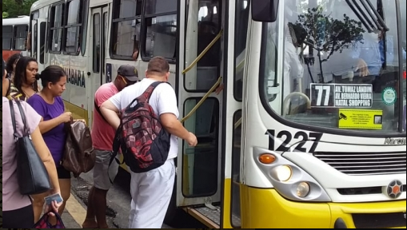

Transporte Publico
O futuro do transporte público e particular movidos a combustíveis fósseis está em xeque. Por isso, o veículo elétrico ganhou força nos últimos anos: é uma nova perspectiva de mobilidade mais sustentável para as cidades. Mesmo que não emitam gases resultantes do consumo de combustíveis fósseis e responsáveis pelo efeito estufa, a fabricação de veículos elétricos gera duas vezes mais poluição do que a de um convencional, de acordo com o Instituto Fraunhofer de Física da Construção. Ainda assim são vistos como positivos pela organização, já que a maior parte dos possíveis poluentes ficará restrita aos arredores das fábricas brasileiras de automóveis, longe dos centros urbanos. Estudos realizados em 2011 pelo Instituto de Pesquisa de Mobilidade, Logística e Engenharia Automotiva da Universidade Livre de Berlim mostram que um carro elétrico que utiliza energia de fonte renovável emite, ao longo de sua vida útil, seis vezes menos gás carbônico do que um carro a gasolina. Tendo em vista que as hidrelétricas são a principal fonte energética do Brasil, o professor da Escola de Engenharia da UFRGS Igor Wiltuschnig defende que o país tem potencial para a adoção desse tipo de veículo. Outra vantagem dos carros elétricos é que são mais econômicos: apesar da demora no abastecimento, o custo-benefício ainda é superior e o motor tem eficiência elevada: “Enquanto um veículo tradicional tem rendimento em torno de 30%, o elétrico chega a 90%”, explica o professor Igor. Em Porto Alegre, a primeira estação de recarga através de energia solar foi instalada no estacionamento externo do Shopping Total em 2017. A iniciativa partiu de ex-estudantes da UFRGS e da Zona de Inovação Sustentável de Porto Alegre em parceria com o governo da Suécia. Até o início de 2018, nenhuma pessoa utilizou a estação para recarregar seu veículo.
Outra vantagem interessante dos carros elétricos é a possibilidade de utilização da sua bateria como recurso energético distribuído – salvo algumas limitações, que também detalharemos a seguir. Hoje em dia, o consumidor está cada vez mais participando ativamente na maneira como sua energia é gerada e consumida. Em um mundo no qual esse consumidor de energia passa a ser um prosumer , os carros e veículos elétricos se tornam um recurso inteligente para melhor utilização da energia. Dessa forma, os VEs estão caminhando para se tornarem, em um futuro próximo, os veículos do futuro. No Brasil, contudo, essa realidade está um pouco mais distante, seja por questões tecnológicas, seja por termos um país diferente do resto do mundo em relação à redução de emissões. Ainda assim, dado que, eventualmente, essa tecnologia terá potencial para ser adotada no país, o momento é propício para iniciarmos a discussão a respeito da sua inserção e seus impactos sobre os setores energético, ambiental e automotivo brasileiros. Isto posto, passada a empolgação inicial e o otimismo tecnológico inerente a qualquer nova tecnologia transformadora, a proposta deste caderno é trazer uma discussão constante e isenta sobre o estado da arte da mobilidade elétrica no Brasil e no mundo, organizado da seguinte forma: além deste Capítulo introdutório, no Capítulo 2 conceituaremos o veículo elétrico, evidenciando suas diferentes tecnologias, infraestrutura de recarga, baterias e potenciais barreiras para sua expansão. Cabe mencionar que, devido ao amplo escopo de atuação da mobilidade elétrica em diversos modais de transporte, este Caderno terá como foco os veículos elétricos rodoviários leves, para o transporte de passageiros – ou carros elétricos. O desenvolvimento do veículo elétrico em outros modais de transporte será objetivo de uma publicação futura.